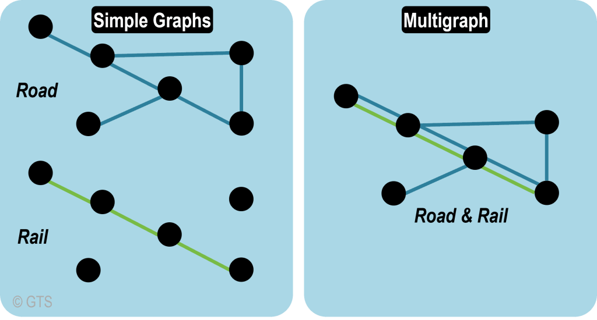
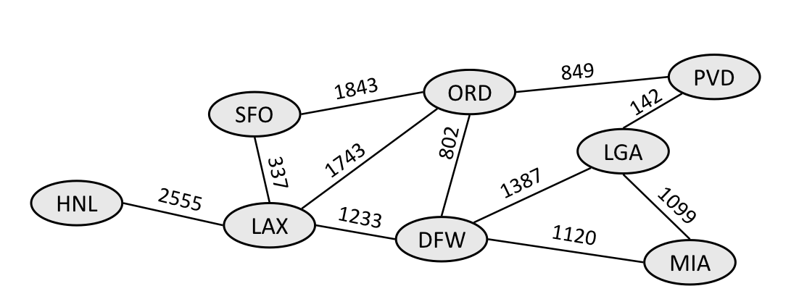

Any person can shake hands with another person only if that other person also shakes hands with the first person.
if an edge from a person A to a person B means that A owes money to B, then this graph is directed, because owing money is not necessarily reciprocated.
0 0 0 0 0 0 0
0 1 1 0 0 1 0
0 1 0 1 0 1 0
0 0 1 0 1 0 0
0 0 0 1 0 1 1
0 1 1 0 1 0 0
0 0 0 0 1 0 0You can use an adjacency Matrix for direct graphs, indicating that either
An adjacency list is a graph representation where each for each vertex you store a list of neighbouring verticies.
0 -> {}
1 -> {1, 2, 5}
2 -> {1, 5, 3}
3 -> {2, 4,}
4 -> {3, 5, 6}
5 -> {1, 2, 4}
6 -> {4}There are different ways to do this implementation: with hash tables, arrays, lists, with OOP and vertex and edge classes.
0 -> {}
1 -> {1, 2, 5}
2 -> {1, 5, 3}
3 -> {2, 4}
4 -> {3, 5, 6}
5 -> {1, 2, 4}
6 -> {4}0 -> {2, 1}
1 -> {3, 4}
2 -> {3}
3 -> {4}
4 -> {}We can also represent a graph by storing a list of edges.
[[0, 1], [0, 2], [0,3], [1,3], [1,4], [2,3], [3, 4]]